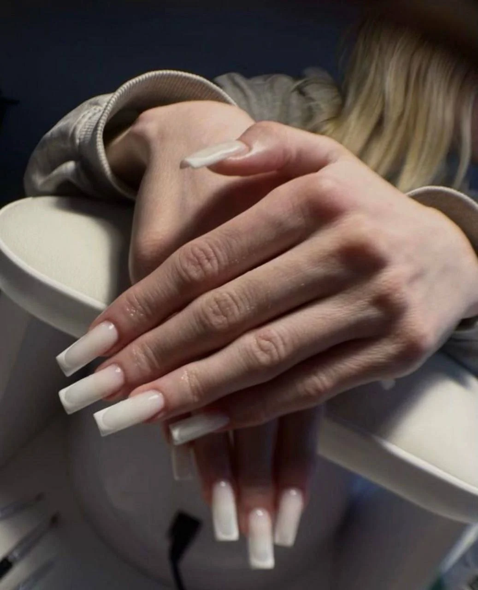

МЕСТО ВАШЕЙ КРАСОТЫ · ВЛАДИМИР
Маникюр и брови
в студии «Амур».
Маникюр, педикюр, оформление бровей и другие услуги.
Владимир, проспект Строителей, 22А.
01 / УСЛУГИ И ЦЕНЫ
Услуги и стоимость.
Основные услуги и цены студии. Нажмите на услугу, чтобы перейти к записи.

Покрытие,
укрепление и дизайн.
Маникюр без покрытия
Обработка ногтей и кутикулы без покрытия
Маникюр с гель-лаком
Снятие, маникюр, укрепление и покрытие
Наращивание ногтей
Наращивание с выбором длины и формы
Цены из опубликованного прайса ВК. В демо они приведены для ознакомления; актуальная стоимость зависит от мастера и указана при записи. Дизайн оплачивается отдельно.
Коррекция бровей
Коррекция формы бровей
Окрашивание бровей
Окрашивание бровей
Ламинирование с окрашиванием
Ламинирование и окрашивание бровей
Ещё 5 услуг
По прайсу из публикаций ВК. Наличие услуги и текущую стоимость подтвердит администратор — перед записью уточните их в сообщениях студии.
Лёгкий дизайн
Простой дизайн ногтей
Френч
Французский дизайн ногтей
Сложный дизайн
Сложный дизайн ногтей
Ремонт ногтя
Ремонт повреждённого ногтя
Дополнительные услуги и актуальная стоимость доступны в полном каталоге онлайн-записи.
02 / РАБОТЫ МАСТЕРОВ
Примеры работ.
Фотографии маникюра и оформления бровей из сообщества студии ВКонтакте.
Показано 4 работы из 8
О СТУДИИ
Студия красоты
во Владимире.
В «Амуре» делают маникюр, педикюр, оформление бровей и другие процедуры. Студия находится на проспекте Строителей, 22А, на 3 этаже.
Написать ВКонтакте03 / МАСТЕРА
Мастера студии.


Расписание и полный состав команды доступны при онлайн-записи.
Здесь царит приятная атмосфера: чисто, удобно, персонал внимателен к пожеланиям.
Мастер очень приятный, вежливо относится к клиенту, приятная обстановка. Сделала всё аккуратно и красиво.
ЧАСТЫЕ ВОПРОСЫ
Перед
визитом.
Здесь собрали основную информацию о записи, услугах и адресе студии.
Написать в студиюКак записаться в студию?
Нажмите «Записаться онлайн», затем выберите услугу, мастера и свободное время. Запись подтверждается во внешней форме онлайн-записи.
Что входит в стоимость маникюра?
В опубликованном прайсе студии маникюр с гель-лаком включает снятие старого покрытия, обработку кутикулы, укрепление и покрытие. Дизайн и ремонт оплачиваются отдельно. Точный состав и текущую стоимость уточните у выбранного мастера перед визитом.
Можно прийти со своей идеей дизайна?
Отправьте понравившееся фото в сообщения студии до визита. Мастер подскажет, возможно ли выполнить такой дизайн, сколько времени потребуется и как изменится стоимость.
Как вас найти и где оставить машину?
Владимир, проспект Строителей, 22А, 3 этаж, офис 307. В описании сообщества указана открытая зона парковки рядом. Кнопка «Построить маршрут» откроет адрес в Яндекс Картах.
04 / АДРЕС И КОНТАКТЫ
Как нас найти.
Владимир, проспект Строителей, 22А
3 этаж, офис 307 · парковка рядомЕжедневно, 09:00–21:00
Ежедневно · по предварительной записиВыберите услугу,
мастера и время.
Перейдите к онлайн-записи и выберите удобное свободное время.
Записаться онлайн